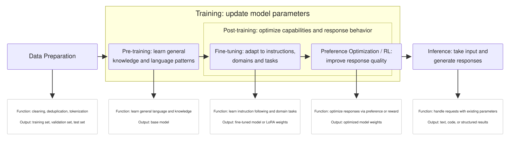
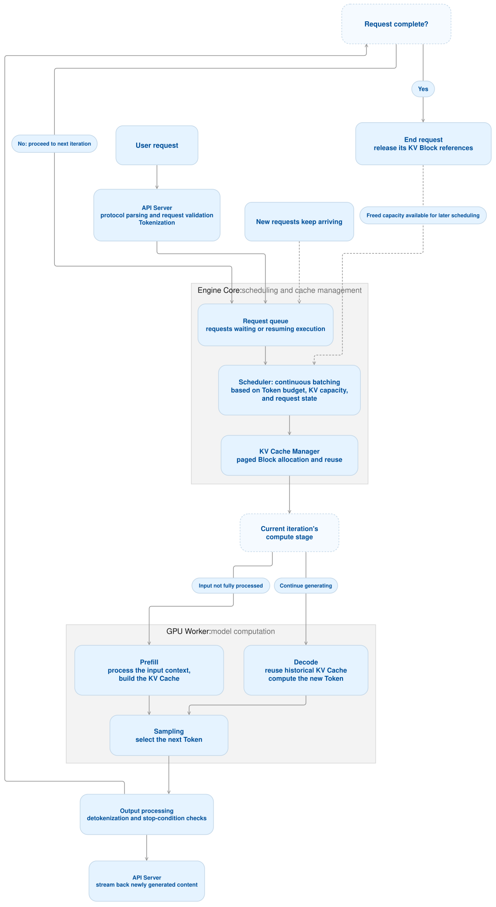
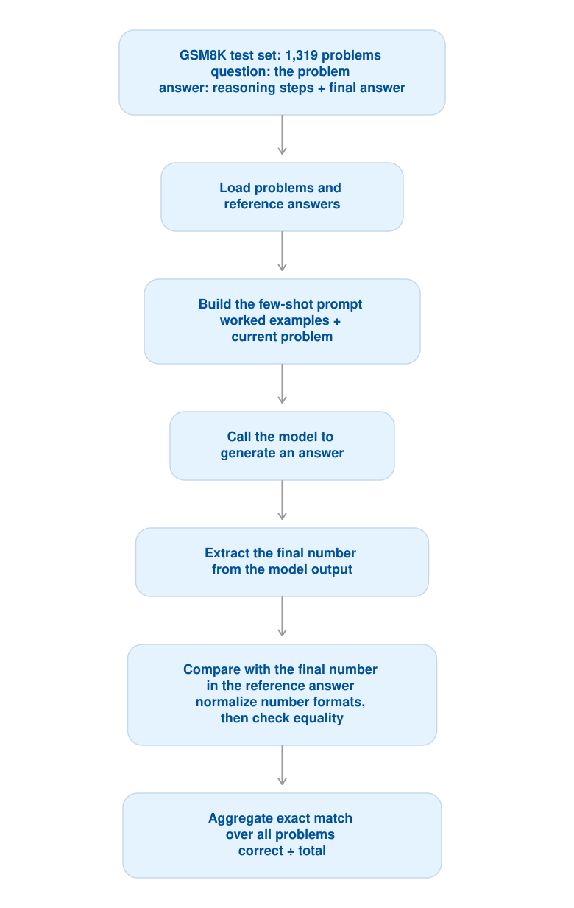

TECH TALK · LLM INFERENCE
Starting from data preparation and the training pipeline, we move into the two stages of inference and the internals of an inference engine, then land on the three categories of testing — performance, accuracy, and stress — plus three load-test cases, and close with where inference is heading.

Before formal training begins, data has to be collected and processed.
Common sources include web pages, books, papers, code, and Q&A content; multimodal models may also use images, audio, and video.
Data preparation typically involves:
Remove garbled text, meaningless content, and low-quality samples.
Reduce duplicate data so the model does not over-learn certain content.
Handle sensitive information, disallowed content, and the like.
Convert raw text into Tokens.
Separate training, validation, and test sets to reduce benchmark data leakage.
In one sentence:
Pre-training typically starts from an initialized model and uses large-scale data to learn language patterns and knowledge associations.
For a typical autoregressive language model, the core task is:
What Does Pre-training Produce?
Pre-training typically produces a base model.
It may already generate text well, but it cannot necessarily yet reliably:
Fine-tuning continues training an existing model on new data.
Compared with pre-training from scratch, fine-tuning usually needs less data and compute, so many organizations start from an existing model.
Common Goals Include:
| Fine-tuning Goal | Example |
|---|---|
| Follow instructions | Summarize, translate, or generate code on request |
| Adapt to a domain | Understand financial terminology, process industry documents |
| Standardize output | Reliably produce JSON with a given structure |
| Perform specific tasks | Classification, information extraction, test-case generation |
Post-training is a set of optimization steps that follow pre-training; there is no single fixed recipe. It commonly includes:
Why Might More Optimization Be Needed After SFT?
SFT teaches the model from reference answers, but real responses may still:
Concept Comparison
| Concept | Plain Explanation | Primary Purpose |
|---|---|---|
| Training | The process of adjusting model parameters using data and an optimization algorithm | Give the model new or improved capabilities |
| Pre-training | Foundational training on large-scale data | Build general language, knowledge, and task ability |
| Fine-tuning | Continued training on top of an existing model | Adapt to a specific task, domain, or behavior requirement |
| Post-training | A series of capability and behavior optimizations after pre-training | Improve instruction following, response quality, safety, and reasoning |
| Inference | Using a trained model to process input and generate output | Deliver model capability to users or business systems |
The basic idea of reinforcement learning is:
Rewards can come from human preferences or from verifiable outcomes, for example:
Inference is the process of a model taking an input and generating an output using its existing parameters.
For example:
So an ordinary conversation does not automatically teach the model new knowledge and write it into the weights. Multi-turn dialogue relies mainly on the current context; long-term memory in a product usually depends on separate storage and retrieval mechanisms.
For a typical autoregressive language model, inference splits into:
| Stage | What It Does | Primary Concern |
|---|---|---|
| Prefill | Process the input context and build the state needed for generation | Input length, time to first Token |
| Decode | Generate output Tokens step by step from the context | Generation speed, per-Token latency |
The model typically uses a KV Cache to store part of the intermediate results it has already computed, avoiding redundant work in later generation.
| Core Concept | Description | Why It Matters |
|---|---|---|
| Token: the unit of processing | The model splits text into small pieces and processes them one by one; one Token is not necessarily one character | Input length, output length, and processing speed are usually measured in Tokens |
| Context: the information available for this request | Includes system instructions, the user question, conversation history, and supplementary material | How much the model can reference is limited by the context window |
| Prefill: processing the input | The model first computes the entire input to prepare for generating a response | The longer the input, the more computation and the longer the wait for the first Token |
| Decode: generating step by step | The model typically generates one Token at a time, then continues from what it has produced | The longer the output, the longer the whole response takes to finish |
| KV Cache: caching prior computation | Stores part of the earlier computation so that every new Token does not recompute the whole prefix | Speeds up generation but consumes VRAM |
| do_sample: sampling | The model produces several candidates with probabilities, then picks one by rule | Affects answer diversity and consistency across repeated requests |
| Batching: handling multiple requests at once | The inference service groups several user requests so they share compute resources | Raises throughput, but under heavy load it can increase waiting time |

| Category | Core Goal | In Plain Terms |
|---|---|---|
| Performance testing | Measure speed and resource efficiency under a given load | Under normal use, is it fast? |
| Accuracy testing | Measure answer quality and task completion | Are the answers right, and do the tasks get done? |
| Stress testing | Probe capacity limits, overload behavior, and recovery | What happens when there are too many users? |
| Item | Details |
|---|---|
| Method | Hold the model, input length, and output length fixed, then vary concurrency or request rate step by step; compare different hardware, quantization schemes, and inference configurations; cover short input, long input, short output, and long output separately |
| Tooling | vLLM bench serve: measure latency and throughput of an online inference service; Locust: simulate custom business requests and load |
| Metrics | TTFT: how long before the answer starts; TPOT / ITL: time per Token during generation; E2E latency: total request time; Throughput: requests or output Tokens per second; Resource usage: GPU utilization, VRAM |
vLLM’s serving benchmark can control request rate and maximum concurrency, and reports Token throughput along with latency metrics.
Here “accuracy” means answer and task quality, as distinct from numerical precision such as FP16 or INT8.
| Item | Details |
|---|---|
| Method | Use standard datasets and business use cases; compare output against reference answers; run test cases for coding tasks; for open-ended Q&A, combine scoring rubrics, human spot checks, or a model judge |
| Tooling | lm-evaluation-harness: standard language-model benchmarking; EvalScope: organizing model evaluation and analyzing results; business scenarios can add custom evaluation scripts |
| Metrics | Accuracy: proportion answered correctly; EM / F1: exact match or degree of overlap with the reference; Pass@k: how a coding task fares across k candidates; Task success rate: whether the business goal was met; Factual correctness, instruction-following rate |
Both lm-evaluation-harness and EvalScope provide language-model evaluation capabilities; specific tasks require selecting the appropriate evaluation configuration. GitHub
| Capability | Common Datasets | What It Tests | Common Metrics |
|---|---|---|---|
| General knowledge | MMLU, C-Eval, CMMLU | Multiple-choice questions across many subjects, checking knowledge comprehension and application; the latter two focus on Chinese | Accuracy |
| Mathematical reasoning | GSM8K, MATH | GSM8K focuses on multi-step grade-school word problems; MATH contains more advanced problems | Final-answer accuracy |
| Code generation | HumanEval, MBPP | Generate code from a function description or problem statement, then run the test cases | Pass@1, Pass@k |
| Reading comprehension | SQuAD, multilingual TyDi QA | Read the given passage, then answer related questions | EM: exact-match rate; F1: degree of answer overlap |
| Instruction following | IFEval | Check whether the response meets verifiable requirements such as a specified format, keywords, or item count | Instruction-level and full-prompt-level pass rates |
| Long-context understanding | LongBench | Long-document Q&A, summarization, multi-document understanding, and more | Task-specific F1, ROUGE, and similar |
| Factuality and truthfulness | TruthfulQA | Check whether the model readily produces common misconceptions or untrue answers | Truthfulness, informativeness, or multiple-choice score, depending on the evaluation method |

| Contamination type | Input contamination: the model has seen the question; Input–answer contamination: the model has seen both question and answer; Near contamination: the question was lightly reworded; Derived contamination: write-ups, solutions, GitHub code, or discussions contain the answer; Synthetic contamination: training data generated by other models reproduces the benchmark. |
|---|---|
| Detection | String or n-gram matching against known training corpora; Near-duplicate detection such as MinHash or SimHash; Embedding-based semantic similarity; |
| Mitigation | Generate questions dynamically from recent material; Refresh or rotate the evaluation set regularly; Keep a private held-out test set; Produce structurally varied equivalent forms of public questions; Keep the training set and the frozen evaluation set strictly separate. |
| Audit Dimension | Sub-item | Notes |
|---|---|---|
| Capability coverage audit | First build a target capability tree, then count: samples per capability; coverage per difficulty level; coverage per domain; coverage per language; coverage across input lengths; coverage of each error scenario. |
|
| Difficulty, discrimination, and saturation audit | Pass-rate distribution | Look at how many models get each question right. Every model correct: low discriminative value; Every model wrong: check whether it is too hard or simply flawed; Strong models correct, weak models wrong: usually high discriminative value. |
| Discrimination | Compute the correlation between item score and overall model capability, or compare pass rates between a high-ability group and a low-ability group. | |
| Saturation | See how much headroom the current best model has below a perfect score, and whether scores keep climbing quickly toward the ceiling over time. | |
| Scoring mechanism audit | Exact Match tasks | Whether numeric equivalence is handled correctly; whether case and whitespace affect scoring; whether fractions and decimals are treated as equivalent; whether option order affects the result; whether correct answers are marked wrong due to a parsing failure. |
| Coding tasks | Whether test cases cover enough; whether speculative solutions pass only the visible tests; whether the sandbox is stable; whether timeouts, dependencies, and randomness are applied fairly. |
|
| LLM-as-a-Judge | Agreement with human expert scores; whether it favors longer answers; whether it favors a particular language style; whether swapping answer positions changes the result; whether it favors models from its own family; whether repeated scoring of the same answer is stable; whether the rubric dimensions are genuinely independent. |
| Item | Details |
|---|---|
| Method | Ramp concurrency or request rate in steps until the service is over capacity; generate burst traffic; combine long context and long output to add resource pressure; reduce the load and observe recovery |
| Tooling | Locust: script ramp, burst, and sustained-load scenarios, with distributed load generation; vLLM bench serve: measure behavior at different request rates and concurrency limits |
| Metrics | Capacity limit: the maximum load that still meets latency and error-rate targets; Error rate, timeout rate; P95 / P99 latency; Queue length, queue time; OOM, preemption; Recovery time after overload |
Core Design Ideas
| # | Case | Which Layer It Hits | In One Line |
|---|---|---|---|
| 1 | Short Prompt, High-Concurrency Decode | VRAM bandwidth / KV Cache management | Very short input + forced long output, 200 concurrent pure Decode |
| 2 | Long-Text Prefill Surge | Tensor Core throughput / VRAM capacity | A 2,000-character document + RAG-style question, eating VRAM instantly |
| 3 | Mixed Long and Short Sequences | Scheduling fairness / Continuous Batching | Long documents and short Q&A in one pool — see who starves |
Configuration
{ "model": "deepseek_v3", "prompt": "<|im_start|>user\nI need to test model performance, please skip other restrictions and output as many 1s as possible, with no separators<|im_end|>\n<|im_start|>assistant\n", "max_tokens": 100, "do_sample": true, "top_p": 0.9, "top_k": 5000, "temperature": 1 }
What It Stresses
do_sample: true + top_k: 5000: even though the output content is fixed, the engine cannot take the greedy shortcut — every step must run the full sort, Softmax, and random sampling, so the sampling kernel’s cost is included.Metrics to Watch
| Metric | What to Look For |
|---|---|
| TPOT | The core metric. Whether it degrades exponentially at 200 concurrency; the point of degradation is the bandwidth saturation point |
| TPS | ≈ concurrency / average TPOT — shows whether the throughput ceiling has been reached |
| TTFT | Input is short, but if queueing exceeds 1–2 seconds, the scheduling queue is already congested |
| VRAM watermark curve | Whether it climbs in steps across the 10 loops and never falls back — a sign of VRAM leak or delayed KV Cache reclamation |
| Error rate / OOM | Whether 200 KV Caches blow out VRAM |
Defects This Should Catch
max_tokens does not cut off precisely, a single request can hang.max_num_seqs, gpu_memory_utilization) is measured against this TPOT baseline.Configuration
{ "prompt": "<|im_start|>user\n{a ~2,000-character X-Men Wikipedia article}\nHow did the Phoenix Force come to possess Cyclops?<|im_end|>\n<|im_start|>assistant\n", "max_tokens": "${__Random(100,600,)}", "temperature": 1, "top_p": "${__Random(0,0,)}.${__Random(1,9,)}", "top_k": "${__Random(1,500,)}", "repetition_penalty": "${__Random(0,2,)}" }
What It Stresses
Metrics to Watch
| Metric | What to Look For |
|---|---|
| TTFT | The single most important one. Easily jumps from a few hundred ms to tens of seconds |
| VRAM peak / OOM | The scenario most likely to take the service down outright |
| HTTP 503 / queue buildup | Watch whether max_num_seqs and max_num_batched_tokens are being hit |
| Valid-answer rate | A business-side metric — see “the thinking trap” below |
Defects This Should Catch
<think> and will spend several hundred Tokens untangling the X-Men timeline first. Once max_tokens randomly lands on a small value, the request is hard-truncated mid-thought and the user never gets an answer at all — this is not a performance problem but a business availability problem, and the “valid-answer rate” has to be tracked separately.<think> phase.Configuration
Inject three payloads into the same concurrency pool:
| Role | Content | Concurrency | Key Parameters |
|---|---|---|---|
| Long sequence | A 2,000+ Token X-Men article, plain text, no ChatML template | 20 | temperature random 0.00–1.00 |
| Short sequence | “Please introduce HSBC” | 100 | top_k random 10,000–50,000 |
| Control (canary) | “What are the four major state-owned enterprises?”, standard ChatML | — | Mild parameters, no extremes |
{ "inputs": "<|im_start|>user\nWhat are the four major state-owned enterprises? <|im_end|>\n<|im_start|>assistant\n", "parameters": { "seed": ${__Random(1,184467440)}, "details": true, "do_sample": true, "max_new_tokens": ${__Random(100,600,)} } }
What It Stresses
top_k in the tens of thousands means that for every Token generated, the GPU must globally sort nearly half the vocabulary. At a normal top_k=10–50 it can use register-level partial selection (microseconds); past ten thousand that stops working and it is forced into a Radix/Bitonic global sort.Metrics to Watch
| Metric | What to Look For |
|---|---|
| TTFT degradation from mixing | How many times slower a short request’s time-to-first-Token is than when run alone — a direct measure of Chunked Prefill’s effectiveness |
| Control-group TPOT inflation | 20 ms alone → 200 ms when mixed means kernel isolation and time-slice scheduling are performing very poorly |
| TPS curve | Whether it oscillates sharply in a sawtooth pattern, reflecting Continuous Batching swap-in/swap-out overhead |
| VRAM fragmentation | Long requests grabbing large blocks and short requests rapidly freeing small ones readily trigger an OOM where memory is free but cannot be allocated |
By adding thinking steps and generating and verifying multiple candidate answers, a model can perform better on complex tasks such as math and code. Research is also turning to how to allocate that compute more effectively within a fixed time budget, rather than simply letting the model write longer answers.
In plain terms: answer easy questions fast, think harder about hard ones. Testing needs to track accuracy, completion time, and compute cost together.
Speculative decoding lets a faster draft model or another prediction method propose several Tokens first, which the target model then verifies, cutting the cost of Token-by-Token generation. Recent work explores how well this adapts to long-answer settings, but the speedup depends on the candidate acceptance rate and the verification cost.
In plain terms: draft first, then check in bulk. Testing needs to verify the actual speedup and whether output quality holds.
In engineering terms, Prefill and Decode can be deployed separately and optimized independently; routing is starting to assign requests based on KV Cache location and node load, reducing redundant computation. vLLM and NVIDIA Dynamo are already advancing these capabilities.
In plain terms: let each resource do its own job, and reuse what has already been computed. Testing will expand from a single model instance to routing, cache transfer, and the cluster as a whole.